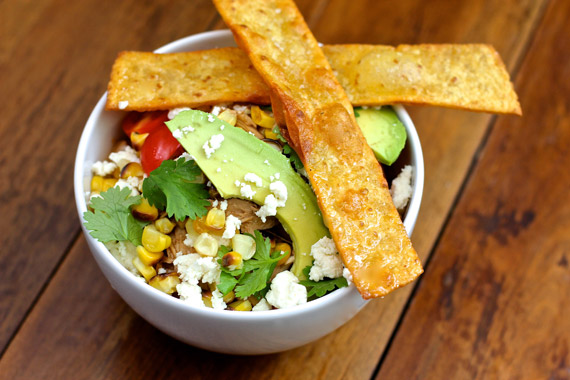

Chicken Tortilla Soup
Description
Chicken soup with Avocado and Fried tortilla Strips
Ingredients
- 1 4-pound chicken
- 1 onion, quartered
- 1 carrot, peeled, chopped
- 5 garlic cloves, smashed
- 2 dried chipotle chiles
- 1 jalapeño (with seeds), halved lengthwise
- 7 cilantro sprigs
- 3 tablespoons (or more) fresh lime juice
- Kosher salt and freshly ground black pepper
- Vegetable oil (for frying)
- 5 corn tortillas, cut in 1/2″-thick strips
- 2 ears of husked corn, or 2 cups frozen, thawed corn kernels
- Chopped fresh cilantro, halved cherry tomatoes, avocado wedges, queso fresco or mild feta
Cooking Instructions
- Bring chicken, onion, carrot, garlic, chipotles, jalapeño, and 16 cups water to a boil in a large soup pot; skim foam from surface. Reduce heat to medium and simmer, skimming the surface frequently, until chicken is cooked through to 165 degrees F, about 45 minutes. (Check the temperature after 30 minutes.)
- Transfer chicken to a plate.
- Strain broth into another large pot. Return chiles to broth, if a spicier broth is desired; discard remaining solids.
- Shred chicken meat; discard skin and bones. Transfer meat to a medium bowl, and set aside.
- Meanwhile, set pot with strained broth over medium heat, and add cilantro sprigs. Bring broth to a simmer; cook until reduced to 8 cups, about 1 hour. Discard sprigs and chiles, if using. Stir in 3 tablespoons lime juice. Season with salt and pepper.
- Add chicken to broth. DO AHEAD: Can be made 2 days ahead. Chill until cold, then cover and keep chilled.
- Attach deep-fry thermometer to the side of a large cast-iron skillet or other heavy skillet. Pour oil into skillet to a depth of 1″. Heat over medium heat until thermometer registers 350°–360°. Working in batches, fry tortilla strips, turning occasionally, until crisp and golden brown, 2–3 minutes per batch. Using a slotted spoon, transfer to paper towels to drain. Season with salt.
- Cook corn over a gas flame or under a broiler, turning occasionally, until charred in spots. Let stand until cool enough to handle. Cut kernels from cobs in strips. Discard cobs. (Alternatively, cook kernels in a large skillet over high heat until charred in spots.)
- Rewarm broth with chicken. Divide soup among bowls. Top generously with corn, tortilla strips, cilantro, tomatoes, avocado, and crumbled queso fresco. Add a final squeeze of lime juice to each bowl, and dig in.